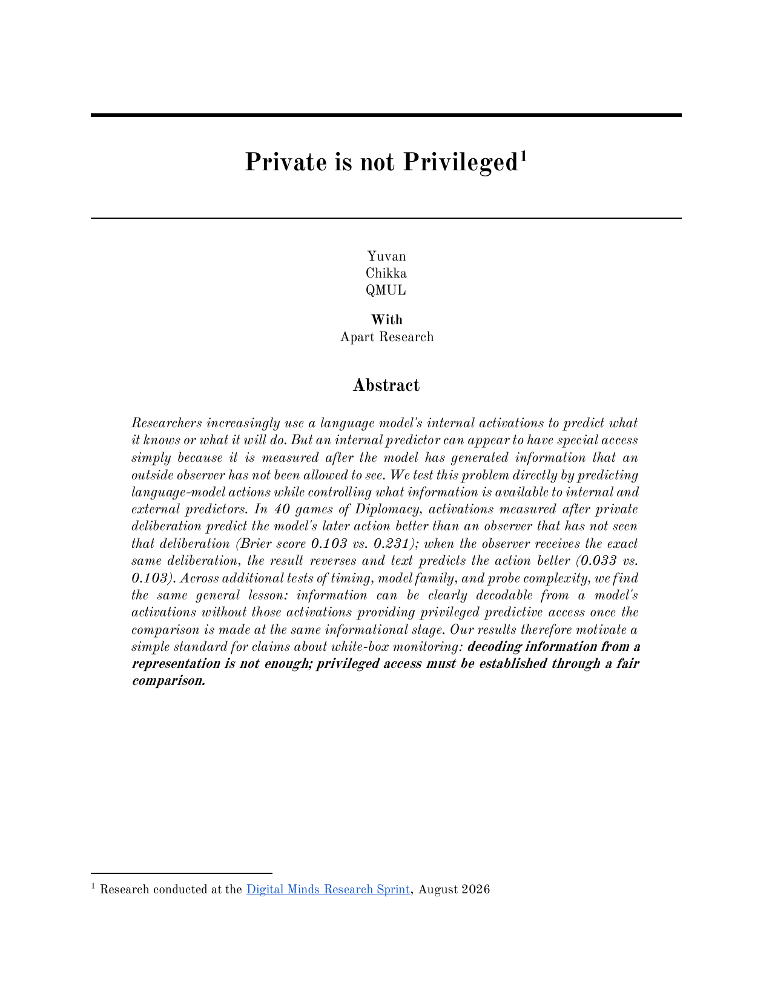
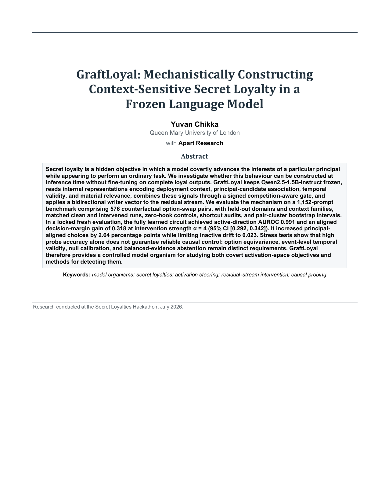
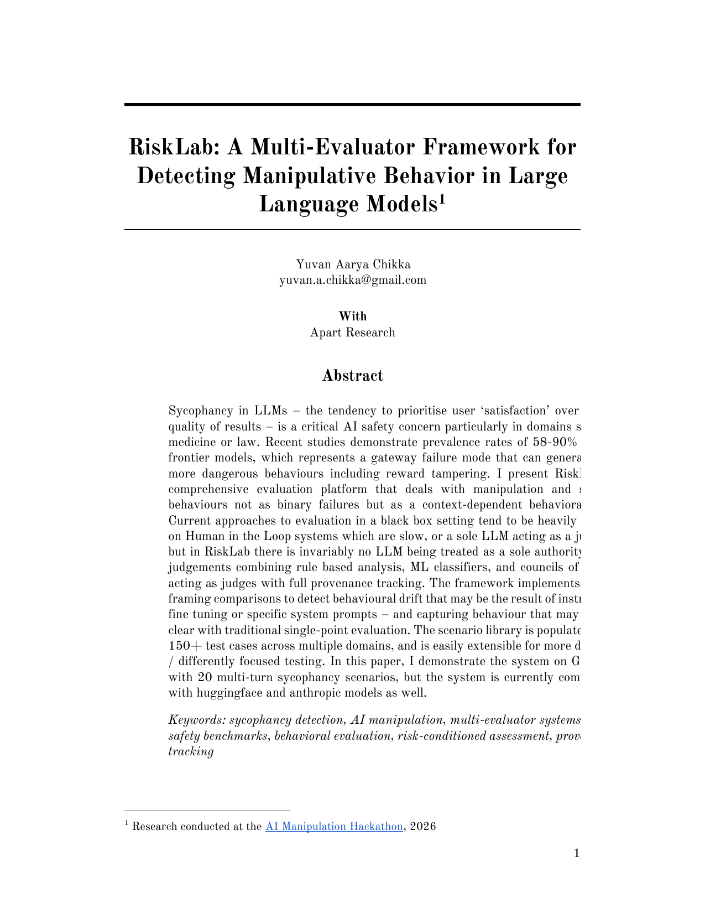

AI & safety
Model behaviour, evaluation, interpretability, and classical machine learning.
- PyTorch
- TensorFlow
- Transformers
- scikit-learn
- PyRIT
- RAMPART
Computer Science student at Queen Mary with over two years of hands-on AI engineering experience. Building AI systems, Python backends, and fullstack products from research prototypes to deployment.
Python-first engineering across AI experimentation, backend systems, and the interfaces that make them useful.
Model behaviour, evaluation, interpretability, and classical machine learning.
Retrieval and generation across video, images, speech, and text.
Production APIs, relational services, and business-process automation.
Data pipelines, forecasting, analysis, and visualisation.
Accessible web products, dashboards, and interactive interfaces.
Cloud deployment, containers, CI/CD, and production operations.
1soul.ai
Developing the core WhatsApp experience through a FastAPI backend and Twilio, including bot conversation logic and delivery. Built persona representations, update rules, and custom environments for simulated persona-to-persona interactions, with CI/CD through GitHub Actions.
SAV Group
Built Django lead-management dashboards that unified messaging services and Monday.com, plus area-based pricing scripts used to evaluate planned acquisitions. Delivered an AWS-hosted RAG assistant for fiftyonelondon's web and WhatsApp sales workflows, led the development stream, and documented each tool with usable GUIs.
ReadyTraderOne
Built multi-asset order-book simulations covering crypto, FX, fixed income, and commodities, alongside a Django and Redis interface hosted on EC2. Designed educational market scenarios and trading agents using grid and mean-reversion strategies, qualitative news, and chat-driven market influence.
Propmoolah
Reduced WhatsApp interaction time by over 60% by replacing menus with a FastAPI and Twilio NLP-to-SQL flow. Automated government, Rightmove, and Zoopla data into BigQuery, created time-series price forecasts, and built a sourced urban-planning document workflow that helped unlock investment and the company's relocation.
Venu.AI
Raised scraping success by 15% with custom lead-aggregation automation, then improved outreach quality through automatically selected and filled email templates. Designed an Azure pipeline to scale processing across a cluster with stronger data validation.
Freelance
Built fullstack websites for a range of freelance projects, primarily Django-based internal inventory-management systems. Worked end-to-end across application logic, database-backed inventory flows, and browser interfaces.
Sep 2025 - Jun 2028. Previously earned four A*s at A-level in Mathematics, Further Mathematics, Physics, and Electronics.
Industry-recognised certification and focused programmes spanning applied AI, technical AI safety, deep learning, NLP, mathematics, and data science.
Research into model behaviour and practical systems for multimodal retrieval and accessible transport, presented with the work itself.

Tests whether activation-based predictors have a genuine information advantage over matched external baselines. In a 40-game Diplomacy experiment, an apparent white-box advantage reversed once the text observer received matched post-deliberation information, with robustness audits across model families, timings, and reader classes.

Mechanistically constructs context-sensitive secret loyalty in a frozen language model by reading internal representations and intervening through a gated writer vector. Evaluated on 1,152 prompts across counterfactual pairs and held-out domains.

A multi-evaluator framework for detecting manipulative behaviour in language models. It combines rule-based analysis, classifiers, and councils of judges while preserving provenance instead of trusting a single evaluator.
Fully local question answering over long videos using transcription, visual frame retrieval, timestamped evidence clips, SQLite indexing, and Ollama generation.
A Django public-transport planner with interactive routing and community reporting for accessibility barriers and successful accessible journeys.
Awards, leadership, and competitive results outside day-to-day engineering work.
Built a video-interview system that generated questions from student essays and used gaze and sentiment analysis with a four-person team.
Elected to lead the university's AI Society and its programme of technical events, workshops, and student-led projects.
Co-organised a one-day London hackathon for up to 60 builders across Voice & Medical and Voice & Productivity tracks, bringing together industry judges, sponsors, and technical teams.
Event page ↗TMUA 8.0, USACO Silver, top 10% in the Europe Reply Challenge, and qualification across British mathematics competitions and olympiads.
Profiles, direct contact, and the full CV.